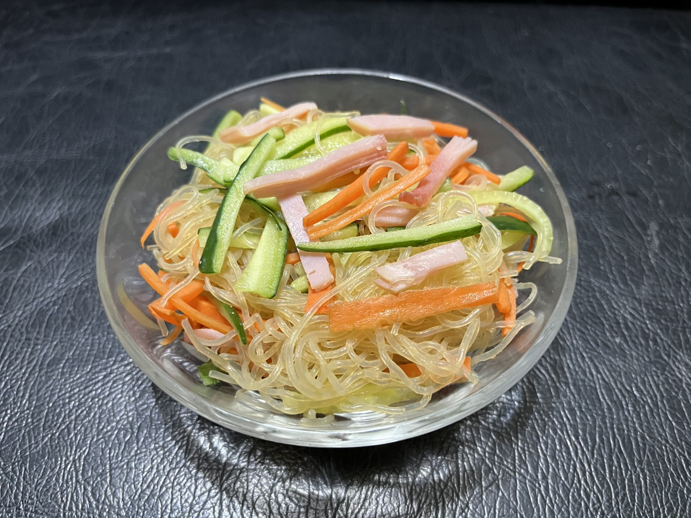

| レシピサイトID：098 |
| 元リンク：インスタ:@yumi_recipe |
| 給食の春雨サラダ |
| ジャンル：中華 |
|  |
| 材料 | 作り方 |
|---|---|
| ・春雨（乾燥）:50g | 1.ハムは細切り、人参は千切りにする。きゅうりは千切りにしたら塩（分量外）を振り10分おいてから水気を絞る。 |
| ・ハム:4~5枚 | 2.耐熱ボウルに、一度全体を見ずにくぐらせた春雨、人参、しょうゆ、砂糖、酢、ごま油、水を入れ、ラップをかけてレンジ（600W）で5~7分加熱。 |
| ・きゅうり:1/2本 | 3.2に1といりごまを振り、和えたら完成。 |
| ・人参:1/3本 | |
| ・しょうゆ:おおさじ1 | |
| ・砂糖:おおさじ1 | |
| ・酢:おおさじ1 | |
| ・ごま油:適量 | |
| ・水:150ml | |
| ・いりごま:適量 |